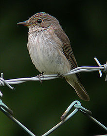
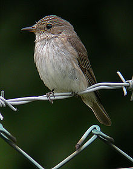

| Spotted Flycatcher | |
|---|---|
|  | |
| Conservation status | |
| Binomial name | |
| Muscicapa striata (Pallas, 1764) |
| Spotted Flycatcher | |
|---|---|
|  | |
| Conservation status | |
| Binomial name | |
| Muscicapa striata (Pallas, 1764) |
The Spotted Flycatcher, Muscicapa striata, is a small passerine bird in the Old World flycatcher family. It breeds in most of Europe and western Asia, and is migratory, wintering in Africa and south western Asia. It is declining in parts of its range.
This is an undistinguished looking bird with long wings and tail. The adults have grey-brown upperparts and whitish underparts, with some streaking on the breast. The legs are short and black, and the bill is black and has the broad but pointed shape typical of aerial insectivores. Juveniles are browner than adults and show the spots on the upperparts which give this species its name.
Spotted Flycatchers hunt from conspicuous perches, making sallies after passing flying insects, and often returning to the same perch. Their upright posture is characteristic.
They are birds of deciduous woodlands, parks and gardens, with a preference for open areas amongst trees. They build an open nest in a suitable recess, often against a wall, and will readily adapt to an open-fronted nest box. 4-6 eggs are laid.
Interestingly, most European birds cannot discriminate between their own eggs and those of other species. The exception to this are the hosts of the Common Cuckoo, which have had to evolve this skill as a protection against that nest parasite. Spotted Flycatcher shows excellent egg recognition, and it is likely that it was once a host of the Cuckoo, but became so good at recognising the intruder's eggs that it ceased to be victimised. A contrast to this is the Dunnock, which appears to be a recent Cuckoo host, since it does not show any egg discrimination.
The flycatcher's call is a thin, drawn out soft and high pitched tssssseeeeeppppp, slightly descending in pitch.

{kind=link}
{kind=link}